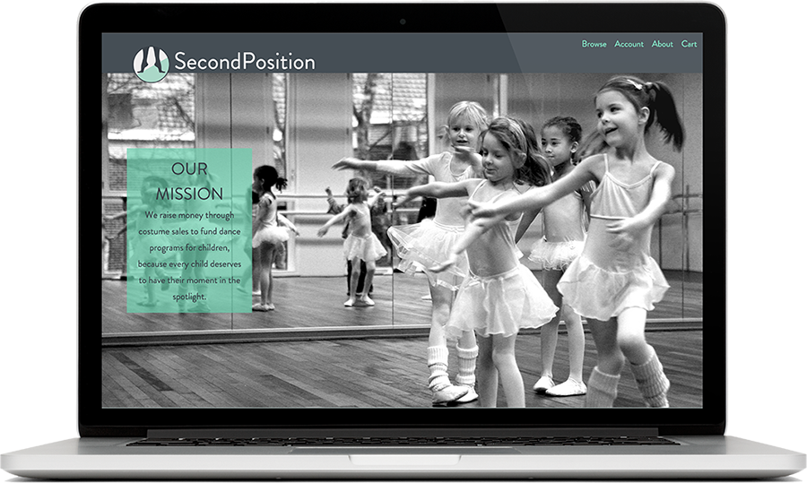
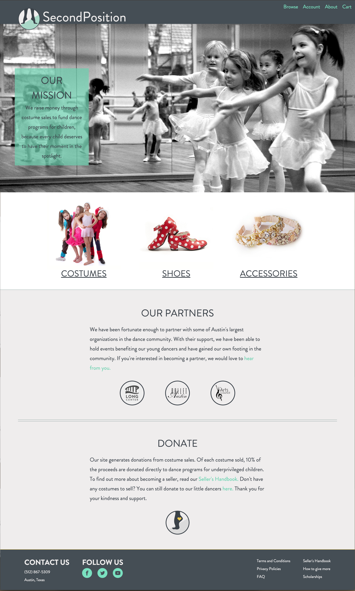
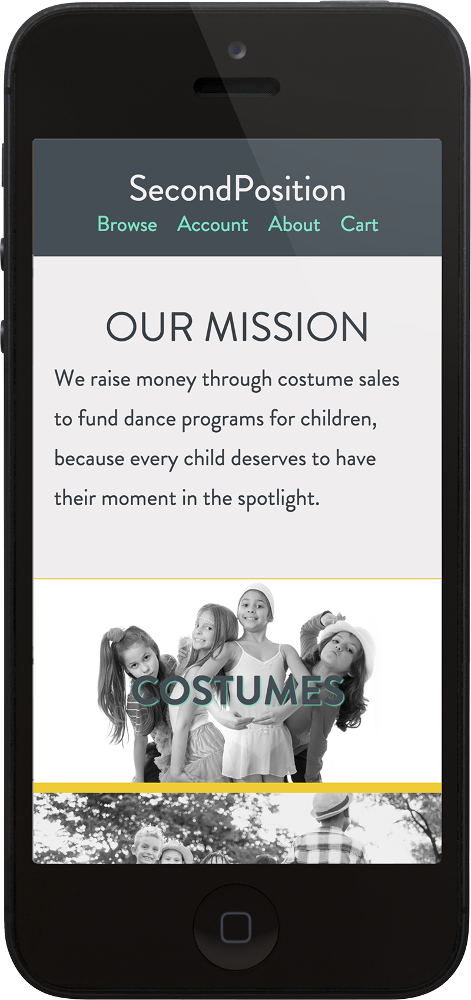

<div class="post-container">
	<div class="project">
		<h2>SECOND POSITION</h2>
		<h4>View <a href="http://stclair.design/second-position/">Live</a> or check it out on <a href="https://github.com/andreastclair/second-position">Github</a><h4>

		
		<h2>ABOUT THIS PROJECT</h2>
		<p>Second Position is website that raises money through costume sales to fund dance programs for children, because every child deserves to have their moment in the spotlight.</p>
		<h2>WHY THIS?</h2>
		<p>I danced ballet for 20 years, as did my sister. On average, we would get 5 new performance costumes each year. So at my parent’s house, there is a closet with 200 costumes, most of which have only been worn for 30 minutes. Total.</p>
		<p>A friend of mine has a four year old who is starting dance this year and I thought that it might be nice to share some of those costumes with her. And then I thought, there’s probably a lot of kids who need costumes. And I know there are a lot of other veteran dancers with hundreds of costumes to spare. The evolution of thought continued until I realized, dance is an opportunity that isn’t available to a lot of kids. And so Second Position was born. A website whose sole purpose is to buy and sell second-hand costumes, with a portion of each sale benefiting scholarships for young dancers who otherwise wouldn’t have the opportunity to dance.</p> 


		

		
		

	</div>	
</div>
	
	
